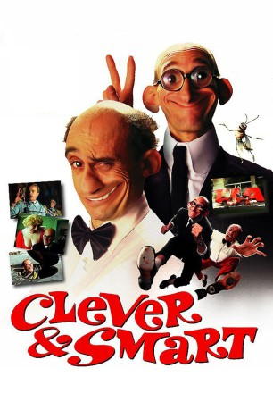

#6657 Clever & Smart
 gesehen am 02.08.2017
gesehen am 02.08.2017
 
 IMDB-Wertung: 5.2 / 10
IMDB-Wertung: 5.2 / 10  Metascore: 0
Metascore: 0 
Dr. Bakterius, Wissenschaftler, hat eine Waffe erfunden, die durch Strahlung die Leute so manipuliert, dass sie sie demoralisiert und ihre Arbeit verweigern. Allerdings wird die Waffe gestohlen und der TIA (Transinternationaler Agentenring)-Geheimdienstchef Mister L setzt für die Suche nicht nur seine beiden Agenten Clever& Smart ein, sondern auch noch einen neuen Detektiv, was zu Reibungen führt.
Jahr: 2003
Dauer: 103 Minuten
FSK: 6
Land: Spanien Studio: Falcom MediaTonspuren:
Untertitel:
Auflösung: SD (704x368) Größe: 1300 MB
Genre: Action, Komödie, Abenteuer
Regisseur: Javier Fesser
Drehbuch: Javier Fesser
Soundtrack:
Darsteller:
 Dominique Pinon als Fredy Mazas
Dominique Pinon als Fredy Mazas Mariano Venancio als El Súper
Mariano Venancio als El Súper- María Isbert als Sra. Filemón
- Luis Ciges als Ingeniero en cemento
- Manolo Caro als Macarra nº 1
- Benito Pocino als Mortadelo
- Pepe Viyuela als Filemón Pi
- Paco Sagarzazu als Tirano
- Janfri Topera als Profesor Bacterio
- Berta Ojea als Ofelia
- Emilio Gavira als Rompetechos
- Germán Montaner als Klaus
- Janusz Ziemniak als Nadiusko
- Paco Hidalgo als Verdugo
- Javier Aller als Mickey el Gigante
- José Manuel Moya als Danino
- Eduardo Gómez als Cornejo
- Pablo Pinedo als Frederico
- Joan Gadea als Tendero
- María Luisa Monasterio als Señora en colmado
- José Alias als Guardia fronterizo
- Juan Peiró als Anciano escayolado
- Andrés Gasch als Elton Matraca
- Manuel Pizarro als Ladrón
- Juana Cordero als Mujer del ladrón
- Goyito Fernández als Madero
- Félix Bergés als Fotógrafo nº 1
- Manuel Román als Fotógrafo nº 2
- José María Bloch als Fotógrafo nº 3
- Emiliana Olmedo als Reina de Inglaterra
- José Marín als Guardia risitas
- Octavio Facello als Esquimal
- Juan Viñuales als Mujer forzuda
- Vicente Pavía als Paseante con perro
- Vicente Pavía Jr. als Motorista accidentado
- Manolo als Mono viandante
- Carlos José als Gato espachurrado
- Manolo Melero als Casero
- Alejandro Espeso als Macarra nº 2
- Juan Morillo als Legionario nº 1
- Marius Attitien als Legionario nº 2
- Alex Amaral als Legionario nº 3
- Chus Sálamanc als Spheenter
- Juan Fran Cisco als Obrero de Tirania
- Ángeles Temprano als Portera
- Jean Claudé als Doble pie Tirano
- Alvaro Duart als Mortadelo niño
- Andrea Bronston als Amena
- Javier Fesser als Periódicos
- Juan Luis Cano als Legionario Encabronado nº 2 , uncredited
Datei: X:\Comic-Filme\Clever & Smart (2003, FSK6, 704x368).avi seit 31.07.2017
Festplatte: Comicverfilmungen+MusikCD
 Es gibt insgesamt 44 Filme in der Gruppe 'Comic-Filme'
Es gibt insgesamt 44 Filme in der Gruppe 'Comic-Filme'